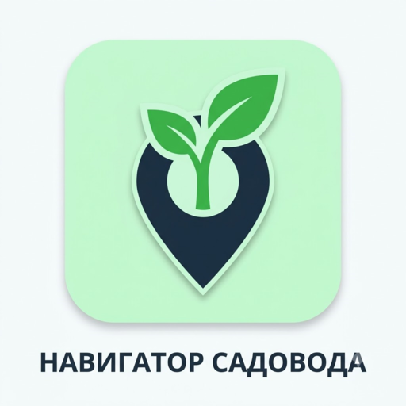

Умное планирование участка, расчёт теней, севооборот и персональный календарь ухода — большинство функций работают даже без интернета.
Выбрать тарифТочный расчёт освещённости и теней от построек для каждого часа дня.
Автоматические задачи по поливу, подкормке и сбору урожая с учётом погоды.
Алгоритм предупреждает, если вы сажаете культуру на «родственное» место.
Учёт семян и инвентаря. Автоматический списание при посадке.
1. Общие положения. Настоящая оферта является публичным предложением Исполнителя (самозанятый, ИНН: 525404993014) любому дееспособному физическому лицу (Заказчику) заключить договор оказания информационных услуг на условиях, изложенных ниже.
2. Предмет договора. Исполнитель предоставляет Заказчику доступ к функционалу мобильного приложения «Навигатор садовода» в соответствии с выбранным тарифом (Стандарт, Премиум, Ультра) и периодом подписки (месяц, сезон, год).
3. Цена и порядок оплаты. Стоимость услуг указана на сайте. Оплата производится через платёжный сервис Юkassa. Доступ активируется в течение 24 часов после подтверждения оплаты.
4. Права и обязанности сторон. Исполнитель обязуется поддерживать работоспособность приложения в рамках выбранного тарифа. Заказчик обязуется не передавать доступ третьим лицам.
5. Возврат средств. Возврат возможен в течение 14 дней с момента оплаты при условии, что доступ к функциям не был использован. Для оформления возврата напишите на bazhenavo@yandex.ru.
6. Заключительные положения. Оферта вступает в силу с момента акцепта (оплаты). Исполнитель вправе изменять условия оферты в одностороннем порядке с уведомлением на сайте.
Дата последнего обновления: 24 июля 2026 г.
Настоящая Политика конфиденциальности объясняет, как мобильное приложение «Навигатор садовода» собирает, использует, хранит и защищает вашу информацию. Мы уважаем вашу конфиденциальность и обязуемся защищать ваши личные данные. Мы не продаём ваши данные рекламным агентствам и третьим лицам.
1.1. Данные, которые вы предоставляете добровольно
1.2. Данные, собираемые автоматически (с вашего разрешения)
Мы строго соблюдаем принципы прозрачности при работе с функциями вашего устройства:
Наши гарантии при работе с разрешениями:
Вы можете в любой момент изменить своё решение и отозвать или предоставить разрешения в системных настройках смартфона.
Приложение предназначено для широкой аудитории и является абсолютно безопасным. Оно не содержит сцен насилия, неприемлемого контента, азартных игр или скрытых покупок.
Мы оставляем за собой право периодически обновлять данную Политику. В случае существенных изменений мы уведомим вас внутри приложения.
Email технической поддержки: bazhenavo@yandex.ru
Дата вступления в силу: 24 июля 2026 г.
Настоящее Пользовательское соглашение (далее — «Соглашение») регулирует отношения между разработчиком мобильного приложения «Навигатор садовода» (далее — «Правообладатель») и любым физическим лицом, использующим данное приложение (далее — «Пользователь»).
Начав использование Приложения, Пользователь подтверждает, что ознакомился с условиями настоящего Соглашения и принимает их в полном объёме. Если вы не согласны с условиями, пожалуйста, прекратите использование Приложения.
1.1. Правообладатель предоставляет Пользователю простую (неисключительную) лицензию на использование Приложения по его прямому назначению на мобильном устройстве Пользователя в личных, некоммерческих целях.
1.2. Приложение предоставляет инструменты для визуального планирования дачного участка, ведения электронного склада (семян, инвентаря), генерации задач по уходу и расчёта инсоляции (далее — «Сервис»).
2.1. Для доступа к облачному сохранению данных и платным тарифам Пользователю необходимо создать учётную запись, используя адрес электронной почты и пароль.
2.2. Пользователь обязуется предоставлять достоверные данные при регистрации и несёт ответственность за сохранность своего пароля.
2.3. В случае утери доступа к учётной записи Пользователь может восстановить его через службу поддержки при подтверждении владения электронной почтой.
3.1. Базовый функционал Приложения предоставляется бесплатно (тариф «Фримиум»).
3.2. Пользователь имеет право расширить лимиты (количество участков, объектов на карте, фотографий в дневнике) и получить доступ к премиум-функциям, оплатив один из доступных тарифов: «Стандарт», «Премиум» или «Ультра».
3.3. Порядок оплаты: все платежи осуществляются через защищённый платёжный шлюз Юkassa. Приложение не запрашивает, не собирает и не хранит реквизиты банковских карт Пользователя.
3.4. Отсутствие автопродления: оплата тарифов осуществляется разовыми платежами за выбранный период (месяц, сезон, год). Автоматические списания (рекуррентные платежи) не применяются. По истечении оплаченного периода Пользователь самостоятельно принимает решение о продлении тарифа.
3.5. В случае окончания платного тарифа данные Пользователя (участки, грядки, склад) не удаляются, однако доступ к добавлению новых объектов ограничивается лимитами бесплатного тарифа.
3.6. Возрастные ограничения: оформляя платную подписку, Пользователь подтверждает и гарантирует, что достиг возраста 18 (восемнадцати) лет. Если Пользователь не достиг совершеннолетия, он вправе оплачивать тарифы только с разрешения и согласия своих законных представителей (родителей, усыновителей или попечителей) в соответствии с действующим законодательством. Правообладатель не несёт ответственности за совершение платежей несовершеннолетними лицами без согласия их законных представителей.
4.1. В соответствии с законодательством о защите прав потребителей, право на возврат средств за предоставленное право использования программного обеспечения (цифрового контента) ограничено.
4.2. Услуга по предоставлению доступа к платному тарифу считается оказанной в полном объёме в момент активации тарифа на учётной записи Пользователя.
4.3. Исключения: возврат средств возможен в течение 14 дней с момента оплаты исключительно в случаях:
4.4. Для запроса на возврат Пользователь должен обратиться в службу поддержки по адресу: bazhenavo@yandex.ru, приложив электронный чек об оплате. Заявки рассматриваются в течение 10 рабочих дней.
5.1. Пользователь имеет право:
5.2. Пользователь обязуется:
5.3. Правообладатель имеет право:
6.1. Приложение предоставляется на условиях «как есть» (as is). Правообладатель не гарантирует, что Приложение будет соответствовать всем индивидуальным ожиданиям Пользователя или работать абсолютно бесперебойно на всех моделях устройств.
6.2. Информационный характер: любые советы, графики полива, расчёты теней и рекомендации по севообороту, генерируемые Приложением, носят исключительно рекомендательный и справочный характер.
6.3. Правообладатель не несёт ответственности за фактический результат сельскохозяйственной деятельности Пользователя, гибель растений, низкую урожайность или иные убытки, возникшие вследствие погодных условий, вредителей или применения рекомендаций Приложения на практике.
6.4. Прогноз погоды и осадков предоставляется сторонними сервисами (Open-Meteo). Правообладатель не гарантирует 100% точность метеорологических данных.
7.1. Весь дизайн, программный код, графика и логотипы Приложения являются интеллектуальной собственностью Правообладателя и защищены законом.
7.2. Пользовательский контент (названия грядок, фотографии урожая) принадлежит Пользователю.
8.1. Правообладатель оставляет за собой право вносить изменения в настоящее Соглашение. Новая редакция вступает в силу с момента её публикации в Приложении.
8.2. Продолжение использования Приложения после изменения Соглашения означает согласие Пользователя с новыми условиями.
По всем вопросам, связанным с настоящим Соглашением, технической поддержкой или возвратом средств, вы можете обращаться:
1. Возврат денежных средств за подписку осуществляется в течение 14 календарных дней с момента оплаты.
2. Условие возврата: доступ к платным функциям не был использован (нет записей в журнале активности).
3. Для оформления возврата отправьте письмо на bazhenavo@yandex.ru с указанием даты оплаты, суммы и номера заказа (payment_id).
4. Срок рассмотрения заявки — до 10 рабочих дней. Деньги возвращаются тем же способом, которым была произведена оплата.